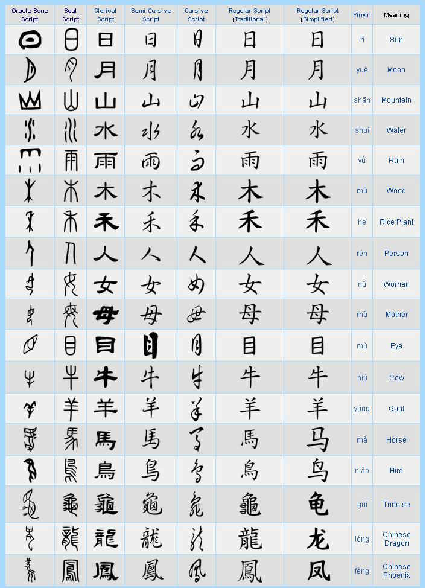

Roughly
six hundred Chinese characters are pictograms (xiàng xíng, "form
imitation") — stylised drawings of the objects they represent. These are
generally among the oldest characters. A few, indicated below with their earliest forms,
date back to oracle bones from the twelfth century BCE.
These
pictograms became progressively more stylized and lost their pictographic flavor,
especially as they made the transition from the oracle bone script to the Seal
Script of the Eastern
Zhou, but also to a lesser extent in the transition to the clerical
script of the Han
Dynasty. The table below summarises the evolution of a few Chinese pictographic
characters. Where no modern simplified form is provided, it is identical to the
traditional character. (Wikipedia)
